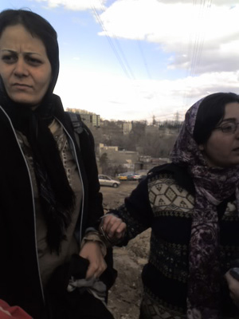
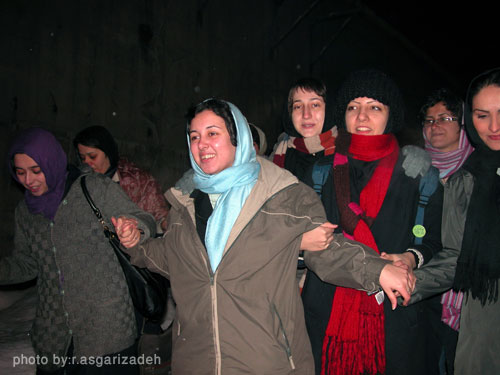
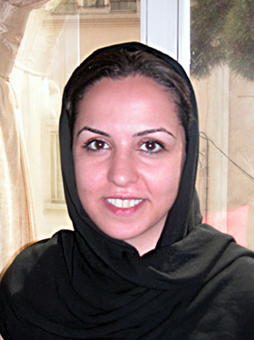

|
|

اقدام علیه امنیت ملی؟
امضاجمع کردن برای کمپین مثل نامه نوشتن برای آسفالت خیابان است
محبوبه حسین زاده
چهار شنبه16 بهمن 1387

پشت دیوارهای بلند اوین هستیم. من و ناهید. جرم مان اقدام علیه امنیت ملی از طریق فعالیت تبلیغی علیه نظام جمهوری اسلامی است. جرم مان اقدام علیه امنیت ملی است در حالی که قبل از دستگیری در پارک لاله با همان مرد بیسیم به دست حداقل نیم ساعتی از خواسته هایمان در کمپین گفته بودم و او هم تاکید کرده بود که نمی تواند بپذیرد چرا سن ازدواج دختران باید 14سال و سن مسئولیت کیفری آنان نه سال باشد در حالی که دختر 16ساله اش هنوز بعضی شبها عروسک بازی می کند.
جرم مان اقدام علیه امنیت ملی بود در حالی که مامور نیروی انتظامی، هم او که بعد از برگزاری جلسه بازپرسی در روز بعد از دستگیری مان، آن قدر مقید بود در عمل به وظیفه اش که هیچ توجهی به اصرارهایم نکرد که نمی خواستم مادر و دوستانمان، ما را دستبند به دست جلوی در دادگاه انقلاب ببیند و دستان من و ناهید را با یک دستبند به هم بست. ناهید با مرد در طول راه تا زندان اوین از خواسته هایمان گفت؛ با همان مردی که او هم یک دختر داشت و خواهرش نیز از همین قانون تبعیض آمیز رنج می برد. مرد می گفت که می داند با این قانون تبعیض آمیز امیدی به آینده دخترش ندارد، اما هیچ راه چاره ای هم ندارد جز این که در چند سال آینده و روز خواستگاری از مهریه و بقیه حقوق صرف نظر کند فقط با این شرط که دامادش را به قرآن قسم دهد تا مبادا به دخترش آسیبی برساند. آن روز چقدر دلم می سوخت برای تنهایی و درماندگی یک مامور قانون که می دانست هیچ قانونی از دخترش حمایت نمی کند. و همان مامور قانون بود که به راننده دستور داد ماشین را جایی نزدیک زندان اوین پارک کند و گفت می توانیم با دوستان مان تماس بگیریم و بگوییم کجا هستیم. و ما همان جایی بودیم که پروین، جلوی چشمان همان مامور که این بار چشمانش را بر همه چیز بسته بود، در غروب اوین عکسی از من و ناهید گرفت دستبند به دست.
— -
پشت دیوارهای بلند اوین هستیم. من و ناهید. می گویند باید امروز همه سلول هایشان را مرتب کنند که برای سرکشی می آیند. همه چادرهای سفیدشان را هم بر سر کرده اند. مسئول اتاق که او هم مثل نه نفر دیگر از هم سلولی هایمان زنی است شوهرکش، اشاره ای به مانتوی کوتاهم می کند. هیچ اجباری نمی بینم در این که چادر بر سر کنم حداقل اینجا که سلولمان است. قاضی نگاهی به جثه لاغر و صورت سرخ شده از شرم راحله می کند و از جرمش می پرسد. بعد از پاسخ راحله با تعجب می پرسد چرا شوهرت را کشتی؟ راحله سکوت می کند. به راحله می گویم چرا حقیقت را نمی گویی. راحله با شرم می گوید:« آخه هر شب با یک خانم می خوابید» و آن موقع هنوز راحله جان داشت و امید به این که اعدام نشود.
از جرم بقیه هم سلولی ها هم می پرسد. قاضی شوکه شده است. انگار تا قبل از این با هیچ کدام از این زنان شوهرکش برخوردی نداشته است. وقتی قاضی با تعجب می پرسد که در این اتاق همه شوهر کشته اند؟ او ا قاطعیت می گوید:« خب وقتی شما، وقتی قانون هیچ حمایتی از ما نکرد، خودمان مجبور شدیم حق خودمان را بگیریم. اگر شما از ما حمایت می کردید نباید الان دور از خانواده و اینجا در انتظار روز اعدام باشیم.» و بعدها او برایم گفت که وقتی بدون وقفه در پاسخ به سوال قاضی گفته بودم: جرمم اقدام علیه امنیت ملی از طریق فعالیت تبلیغی علیه نظام جمهوری اسلامی است به این نتیجه رسیده که این بار نباید مثل همیشه سکوت کند و باید در دفاع از خود بگوید که چرا مرتکب جرم شده است؟باید بگوید تا شاید صدایش به جایی برسد و زنی دیگر از سر ناچاری و تبعیض مجبور به قتل و در حقیقت صدور حکم مرگ و اعدام خود نشود.
و ما هنوز در زندان بودیم که سخنگوی قوه قضائیه در پاسخ به خبرنگار اعتماد ملی اتهام مان را با صراحت اقدام علیه امنیت ملی اعلام کرده بود.
— -
پشت دیوارهای بلند اوین است. امیر یعقوبلی. او هم هنگام جمع آوری امضا دستگیر شده است و یک ماه در سلول های انفرادی 209وزارت اطلاعات زندانی می شود. امیر تولد 20سالگی اش را در سلولهای انفرادی می گذارند به همان اتهام اقدام علیه امنیت ملی. البته این بار امیر باید در بازجویی هایش به سوال مهم تری جواب بدهد؛ مردان را چه به حقوق زنان؟ و راستی اگر مردان را چه به حقوق زنان، چرا این همه تبعیض و نابرابری از قانون های نوشته شده توسط مردان به زنان اعمال می شود؟ اگر مردان را چه به حقوق زنان، پس چرا کرسی های بیشتری در دستگاه های قانون ساز و تصمیم گیر به زنان داده نمی شود تا مردان به جای زنان تصمیم نگیرند؟ اگر مردان را چه به حقوق زنان، پس چرا در دادگاه های خانواده حتی یک قاضی زن وجود ندارد تا از حقوق زنان دفاع کند؟ بازداشت امیر نگاه ها را به سمت مردان جوانی جلب می کند که تلاش می کنند برای برابری انسان ها؛ مردانی که آنان هم خسته اند از فشار قانون تبعیض آمیز بر زندگی خواهران، مادر و همنوعان خود.
— -

پشت دیوارهای بلند اوین هستند. مریم و جلوه. اتهام باز همان اقدام علیه امنیت ملی است اما این بار از طریق فعالیت در سایت تغییر برای برابری. هرچند در دوران یک ماه و نیمه زندان، اتهامات جدیدی علیه آنها مطرح می شود؛ اتهامات جدیدی مطرح می شود تا شاید این بار نگاه ها از تلاش برای تغییر قانون تبعیض آمیز به سمت دیگری منحرف شود؛ اما این وصله ها ناجورتر از آن است و این تبعیض ها گویاتر از آن که بتوان بدین گونه اذهان عمومی را منحرف کرد.

مریم و جلوه از دیگر زنان زندانی قربانی قانون تبعیض آمیز می نویسند. راحله در آستانه اعدام است. این بار مریم بارها می نویسد از راحله و هربار تماس می گیرد برای خواندن نوشته هایش تا شاید در روزنامه ای چاپ شود؛ تا شاید جلوی مرگ راحله گرفته شود. دستور توقف حکم اعدام و فرصت یکماهه ای که به راحله داده می شود، نور امیدی است برای دیگر زنان زندانی؛ برای آنان تا بخواهند بیشتر با حقوق شان آشنا شوند. اما فرصت یکماه به دوهفته تبدیل می شود و راحله صبح همان روزی اعدام می شود که غروبش مریم و جلوه آزاد شدند. راحله دیگر جان نداشت و این بار دیگر نگاه ها به سمت زنانی جلب شده بود که اجبار قانون تبعیض آمیز آنان را به پای چوبه های دار می کشاند.
— -
پشت دیوارهای بلند اوین هستند. رها و نسیم. اتهام این بار اقدام علیه امنیت ملی از طریق فعالیت تبلیغی علیه نظام مقدس جمهوری اسلامی ایران است. رها و نسیم هم در حال جمع آوری امضا در تاتر شهر دستگیر شده اند.
رها و نسیم هنوز در زندان بودند که این بار سخنگوی قوه قضائیه در پاسخ به خبرنگاری گفت: ممکن است جمع آوری امضاء به خودی خود جرم نباشد، اما چون سبب تشویش اذهان عمومی می شود، تبلیغ علیه نظام و جرم است.
— -
آیا جمع آوری امضا، جرم است
در روزهایی که برخورد با اعضای کمپین ادامه داشت و دارد، قانون هم تغییر زیادی کرده است. دیه زن و مرد در خسارت رانندگی و سوانح یکسان شده است. زنان هم می توانند از اموال غیرمنقول شوهران شان ارث ببرند و دیگر مجلس به همین راحتی ها نمی تواند به تسهیل چندهمسری مردان رای بدهد.
این بار اما برخوردها با زنان برابری خواه کمپین که نمی توان منکر تلاش آنان در تغییر قانون شد، از نوع دیگری است. این بار دیگر تلاش می شود تا پای زنان برابری خواه کمپین به بندهای عمومی زندان اوین باز نشود تا صدای درد و رنج زنان قربانی قانون تبعیض آمیز بیشتر از این به گوش دیگران نرساند. این بار به اتهامی دیگر که هرچند در نهایت به همان اقدام علیه امنیت ملی نظام و یا تبلیغ علیه نظام ختم می شود، خدیجه مقدم نه روز در بازداشتگاه موقت وزرا می ماند و امروز نوبت نفیسه آزاد است که در هنگام جمع آوری امضا دستگیر شود و با همان اتهام اقدام علیه امنیت ملی راهی بازداشتگاه موقت وزرا شود. اما آیا جمع آوری امضا جرم است و اقدام علیه امنیت ملی؟
در حکم تبرئه نسیم و رها در دادگاه انقلاب اسلامی آمده است: " جمع آوری امضا برای تغییر قانون همانند اقدامات هر شهروند ایرانی نظیر درخواست از جهت آسفالت یا جدول بندی خیابان و ...است» در ادامه این حکم آمده است:«صرف جمع آوری امضا به منظور تغییر قانون مربوط به زنان در حد اقدام تبلیغی علیه نظام و امینت کشور محسوب نمی گردد. لذا مستند به اصل 37قانون اساسی و ماده 177 قانون آئین دادسری دئادگاه های عمومی و انقلاب در امور کیفری رای برائت متهمان را صادر می کنم.»

امروز که باز نفیسه هنگام جمع آوری امضا دستگیر شده و باز به همان اتهام اقدام علیه امنیت ملی در بازداشتگاه وزرا است، باید این سوال را پرسید که اگر جمع آوری امضا جرم نیست و اگر کار ما همانند جمع آوری امضا برای آسفالت کردن خیابان است، پس تا کی این دستگیری ها به اتهام اقدام علیه امنیت ملی ادامه خواهد داشت؟ چه کسی پاسخگوی روزهایی است که در زندان گذراندیم؟ اگر اقدامات ما تشویش اذهان عمومی است و اقدام علیه امنیت ملی و یا تبلیغ علیه نظام، پس چرا در مجلسی که از ارکان تصمیم گیری نظام جمهوری اسلامی است صحبت از تغییر قانون تبعیض آمیز علیه زنان است؟ چرا یکی از وعده های اصلی کاندیداهای اصولگرای مجلس هشتم، اصلاح و تغییر قانون تبعیض آمیز علیه زنان است؟ چرا هر روز بر حجم فتواهای مراجع تقلید در مورد تغییر قانون مربوط به زنان افزوده می شود؟ آیا سخن گفتن از قانون تبعیض آمیز و تلاش مدنی برای تغییر آن مشوش کردن اذهان عمومی است؟ آیا نوشتن از زندگی زنان زیر بار قانون تبعیض آمیز، مشوش کردن اذهان عمومی است؟ اگر این کار مشوش کردن اذهان عمومی است پس چرا شبیه جمع آوری امضا برای آسفالت خیابان فرض می شود و برای آن حکم تبرئه صادر می شود؟ آقایان صدای برابری خواهی به درون خانه های شما هم رسیده است، اگر دختران، همسر و خواهران شما هم این خواسته ها را داشته باشند آیا باید به اتهام تشویش ادهان عمومی محاکمه شوند؟ اذهان عمومی از این همه تبعیض و نابرابری مشوش می شود یا از تلاش برای تغییر قانون تبعیض آمیز؟ آیا قانون تبعیض آمیز از افتخارات نظام محسوب می شود که صحبت کردن از آن تبلیغ علیه نظام محسوب می شود؟
توضیح: در این نوشته فقط از برخی از دستگیری های اعضای کمپین یک میلیون امضا در تهران نام برده شده است ولي اين باعث نمي شود فراموش كنيم كه زینیب پیغمبر زاده، فاطمه دهدشتی، همایون نامی، سعیده امین،سارا ایمانیان، احترام شادفر هم به دليل جمع آوري امضا بازداشت شده و هركدام چندشبي را در بازداشتگاه وزرا گذرانده اند.